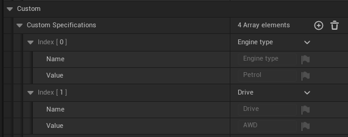
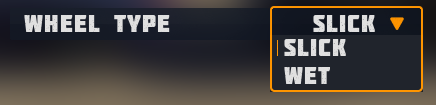

Навигация: README | 01. Минимальный автомобиль | 02. Экстерьер, свет и мир | 03. Салон, приборка и камеры | 04. Зеркала и дворники | 05. Звуки и FMOD | 06. Комплектации, логика и шпаргалка
В финальном модуле собраны продвинутые возможности оформления и настройки мода, а также единая шпаргалка по всем ControlBlock, родительским материалам MI_Mod_* и особым именам из кода.
DA_<ИмяМода> (PDA_PrototypedVehicleSpecification)Базовые обязательные поля (Name, Image, Class, EngineTypes, TransmissionTypes) вы уже настроили в Модуле 1. Помимо них в секции Custom доступны два мощных инструмента:
CustomSpecifications)Позволяют вывести любые справочные параметры автомобиля (привод, максимальная скорость, грузоподъёмность, мощность и т. д.) прямо на карточку выбора транспорта в меню.
CustomSpecifications.Name (название характеристики) и Value (значение).
MultiSpecifications)Работают точно так же, как выбор типа КПП (TransmissionTypes), и позволяют игроку прямо в меню настроек автомобиля переключать любые ваши физические опции — например, тип шин (летние/зимние/спорт), разные двигатели, подвески или пакеты настроек!
Как связать MultiSpecifications с физикой:
DA_<ИмяМода> → MultiSpecifications добавьте новую спецификацию (например, Name = "Tire Type"), внутри её массива Values добавьте варианты (например, Summer, Sport), включите на каждом Bound to Option и укажите Option Name и Option Value.options.xml в папке мода объявите опцию с точно такими же именами (с SetSchema="false", так как SetSchema="true" может быть только у одной опции — обычно у TransmissionType):<Option Name="TireType" SetSchema="false">
<OptionValue Value="Summer" />
<OptionValue Value="Sport" />
</Option>Vehicle.ini добавьте секции переопределения параметров вида [ИмяКомпонента.ИмяОпции.ЗначениеОпции]:[WheelFrontLeft.TireType.Sport]
FrictionCoeff = 1.15MultiSpecifications автоматически появятся в меню настроек выбранного автомобиля в игре!

VehicleLib)Все стандартные XML-схемы и таблицы кривых лежат в основном проекте по путям:
Content/Common/Vehicles/MotorCars/Schemes/ (AwdAuto.xml, AwdManual.xml, FwdAuto.xml, FwdManual.xml, RwdAuto.xml, RwdManual.xml)Content/Common/Vehicles/MotorCars/Tables/ (SpringProgression.csv, EngineVibration.csv, WheelForceLat.csv, WheelForceLon.csv и др.)Правило редактирования схем и таблиц:
Никогда не изменяйте файлы внутри Content/Common/Vehicles/MotorCars/ — они не попадут в ваш .pak!
Если вы хотите изменить схему или кривую под свой автомобиль — скопируйте файл в папку вашего мода Plugins/Mods/Content/<ИмяМода>/ и пропишите к нему относительный путь ../Plugins/Mods/Content/<ИмяМода>/<Файл> в Vehicle.ini / options.xml.
Подробный справочник по всем 46 классам компонентов физики, формулам расчёта и каналам ввода/вывода находится в отдельном руководстве VehicleLib_HTML:
Engine.csv, АКПП/МКПП и 5 контрольных тестовEngineDiesel + Turbocharger), форматы .csv*Intensity, входы и состоянияCarElectricsЕсли вы умеете работать с Blueprints в Unreal Engine и хотите добавить автомобилю собственную интерактивную логику (анимацию спойлера, дополнительные эффекты и т. п.):
Не пишите пользовательскую логику прямо в Event Graph самого Актора автомобиля (V_<ИмяМода>)!
Вместо этого создайте отдельный ActorComponent (ПКМ в Content Browser → Blueprint Class → Actor Component), напишите всю логику внутри него и добавьте этот компонент в ваш Актор.
На таком пользовательском компоненте НЕ должно быть ControlBlock (Control Asset Data) — тогда игра не будет его перехватывать, и он будет работать штатно.
Следующие имена зашиты в движок именно в таком виде — пишите их символ в символ, не «исправляя» орфографию:
ControlBlock дворников: Wippers (с двумя p)SuspentionSound_FR, SuspentionSound_FL (через t)SpeedometrArrow (без буквы e)MI_Mod_Emissive_Ikons (через k), MI_Mod_Stiches (без t)Vehicle.ini: Back (SuspensionBackLeft/Right, WheelBackLeft/Right), а НЕ Rear!ControlBlockИмя ControlBlock |
Куда вешается | Свойства (Properties: имя, тип, значения) |
Модуль |
|---|---|---|---|
Camera |
SceneComponent / CameraComponent |
Type (String: ThirdPersonBack, ThirdPersonFront, FirstPerson, Windshield, TopDown); опц. ArmLength (Float) |
1, 3 |
Light |
BP_ExportSpotLight / SpotLightComponent |
PhysicsOutput (StringArray: LowBeamIntensity, HighBeamIntensity, StopLightIntensity и др.) |
2 |
LogicBox |
BoxCollision |
(нет свойств) | 2 |
FuelTank |
SceneComponent (в нулевых трансформах родителя) |
(нет свойств) | 2 |
RainBlocker |
StaticMeshComponent (с MM_Wireframe) |
(нет свойств) | 2 |
SteeringWheel |
StaticMeshComponent (внутри InteriorObjects) |
(нет свойств) | 3 |
SpeedArrow |
StaticMeshComponent (стрелка в позиции 0) |
MaxAngle (Float), MaxValue (Float) |
3 |
RPMArrow |
StaticMeshComponent (стрелка в позиции 0) |
MaxAngle (Float), MaxValue (Float) |
3 |
FuelArrow |
StaticMeshComponent (стрелка в позиции 0) |
MaxAngle (Float) |
3 |
CoolantTemperatureArrow |
StaticMeshComponent (стрелка в позиции 0) |
MaxAngle (Float), MinValue (Float), MaxValue (Float) |
3 |
SalonLights |
SceneComponent (или скопированный DashboardController) |
Ключ = канал физики (*Intensity), значение = StringArray имён слотов материалов |
3 |
Seats |
StaticMeshComponent (с сокетами <Имя>_Landing) |
Names (StringArray, напр. ["Seat0"]), опц. DriverIndex (Int, напр. 0) |
3 |
CarToy |
SceneComponent (или SM_Cosmonaft_Anim) |
(нет свойств) | 3 |
Mirror |
StaticMeshComponent (с сокетом Camera и UV1) |
опц. FOV (Float, реком. 20–40) |
4 |
Wippers (два p!) |
SkeletalMeshComponent (Animation Asset) |
Side (String: Front или Rear) |
4 |
SoundEvent |
SceneComponent |
Type (String, обяз.); опц. MinimumAttenuationDistance / MaximumAttenuationDistance (Float); парой Bank (String) + EventName (String) |
5 |
ModMaterials)Папка в проекте: Content/Common/MasterMaterials/VehicleMaterials/ModMaterials/
| Материал | Назначение |
|---|---|
MI_Mod_CarPaint |
Окрашенные части кузова (поддерживает текстуру ливреи Livery с альфа-маской). |
MI_Mod_Exterior |
Пластик, хром, неокрашенные элементы кузова, диски колёс, суппорты. |
MI_Mod_Tyre |
Покрышки (шины) колёс. |
MI_Mod_Glass |
Стёкла автомобиля и плафоны фар (прозрачные и цветные). |
MI_Mod_Emissive_Beam |
Внешние светящиеся элементы кузова (лампы фар, поворотников, стоп-сигналов). |
MI_Mod_Wipers |
Щётки и поводки стеклоочистителей (дворников). |
MI_Mod_Vehicle_Interior |
Обшивка, торпедо, сиденья и основные поверхности салона. |
MI_Mod_PanelGlass |
Защитное стекло приборной панели. |
MI_Mod_Stiches |
Материалы салона с маской прозрачности (строчка сидений, оплётка руля). |
MI_Mod_Mirror |
Материал плафона / корпуса центрального салонного зеркала. |
MI_Mod_Emissive_Ikons |
Светящиеся иконки-индикаторы на приборной панели (дашборде). |
MI_Mod_Emissive_Panel |
Светящиеся элементы приборной панели (стрелки, шкалы). |
MI_Mod_Emissive_Saloon |
Подсвечиваемые кнопки в салоне (стеклоподъёмники, переключатели и т. п.). |
MI_Mod_LicensePlate |
Не используется в модах (слот LicensePlates оставляется пустым, игра подставляет материал сама). |
Plugins/Mods/Content/<ИмяМода>/, в именах нет кириллицы и пробелов.Virtual Texture Streaming (метка VT), все MRA-карты имеют Compression Settings = Masks (no sRGB), текстуры световых пятен LFM_VehicleLightSpot — Alpha.Master Material — только Material Instance от MI_Mod_*.Scale = (1.0, 1.0, 1.0).BlockAllDynamic настроена только на Body; на всех остальных узлах (колёса, суппорты, салон, стёкла, зеркала, дворники) выставлено NoCollision и отключено Receives Decals.Vehicle.ini и options.xml указывают на вашу папку (../Plugins/Mods/Content/<ИмяМода>/...) или общие пути Common/..., а перед точкой с запятой ; нет пробелов.Camera, запущен Generate UVs by Vertex Positions и ассеты сохранены.Ctrl + Shift + S), все Blueprints скомпилированы (Compile без ошибок).build_mod_dlc.bat, файл \Saved\DLC\Windows\Mods.pak переименован в <ИмяМода>.pak и проверен локально в CityCarDriving2/Content/Paks/.RainBlocker и дворники), на АЗС (FuelTank) и во всех камерах.